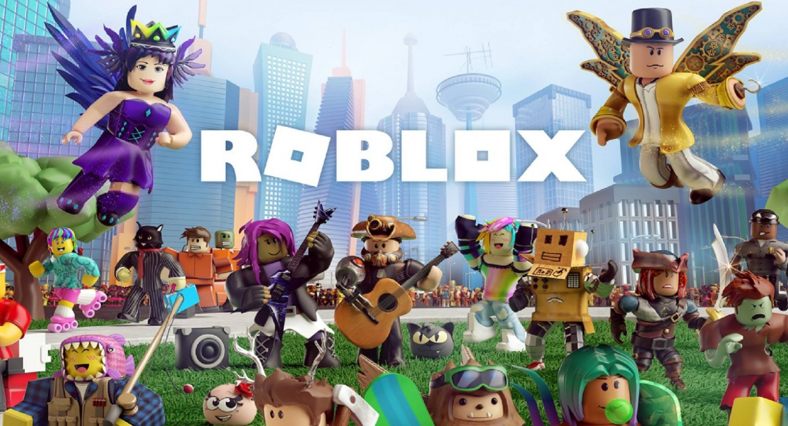

РОБЛОКС
Это очень весёлая и позновательная игра ИНТЕРЕСТНЫЙ ФАКТ Это не сюжет Half-Life, а реальная история. В 1989 создатели Roblox занимались программным обеспечением, предназначенным для моделирования физических процессов и обучения школьников. Один из симуляторов, виртуальная лаборатория Interactive Physics, до сих пор в рабочем состоянии и может наглядно продемонстрировать школьникам некоторые базовые физические явления, в основном – механические. Ну, к счастью, за 30 с лишним лет законы физики особо не изменились.
Звук из РОБЛОКС
Офис разработчика
"Подробно о роблоксе
Roblox — игровая онлайн-платформа и система создания игр, позволяющая любому пользователю создавать свои собственные и играть в созданные другими игры, охватывающие широкий спектр жанров. В некоторых источниках Roblox называют метавселенной. По состоянию на август 2020 года у Roblox более 164 млн активных пользователей в месяц; на октябрь 2021 года более 226 млн. Все они, в общей сумме, наиграли в нём более 107 млрд часов. Причём в Roblox играют более половины всех детей США в возрасте до 16 лет. Рост его популярности начался во второй половине 2010 года, а резко ускорился в связи с пандемией COVID-19. Сайт игровой платформы занимает второе место по популярности среди подростков, сразу после сайтов Google, включая YouTube. В начале 2024 года Roblox побил мировой рекорд по онлайну, набрав 9,7 млн активных пользователей.
Бета-версия Roblox была создана соучредителем Дэвидом Базуки в 2004 году. Базуки начал тестировать первые демонстрации в этом году.
В марте 2007 года Roblox стал совместимым с COPPA, с добавлением безопасного чата, что ограничило пользователей в возрасте до тринадцати лет общением путём выбора предварительно определённых сообщений из меню. В августе разработчики Roblox добавили Клуб Строителей, премиум-подписку и усовершенствовали сервера.
В декабре 2011 года Roblox провёл свою первую Hack Week, ежегодное мероприятие, на котором разработчики Roblox работают над инновационными нестандартными идеями для новых разработок, которые будут представлены компании.
11 декабря 2012 года Roblox выпустил версию игровой платформы для iOS
1 октября 2013 года Roblox выпустил систему Developer Exchange, позволяющую разработчикам обменивать Robux, заработанный на своих играх, на реальную валюту.
31 мая 2015 года была добавлена функция, увеличивающая графическую точность рельефа и изменяющая физический движок с блочно-ориентированного стиля на более плавный и более реалистичный стиль. 20 ноября Roblox был запущен на Xbox One с первоначальным выбором из 15 игр, выбранных сотрудниками Roblox. Новые игры Roblox для этой консоли должны пройти процедуру утверждения и соответствовать стандартам Совета по рейтингу развлекательного программного обеспечения.
В апреле 2016 года был запущен Roblox VR для Oculus Rift. На момент выпуска более десяти миллионов игр были доступны в 3D. Примерно в то же время функция безопасного чата была удалена и заменена системой, основанной на белом списке с набором приемлемых слов для пользователей младше 13 лет и в чёрном списке для других пользователей. В июне этого же года компания выпустила версию, совместимую с Windows 10.